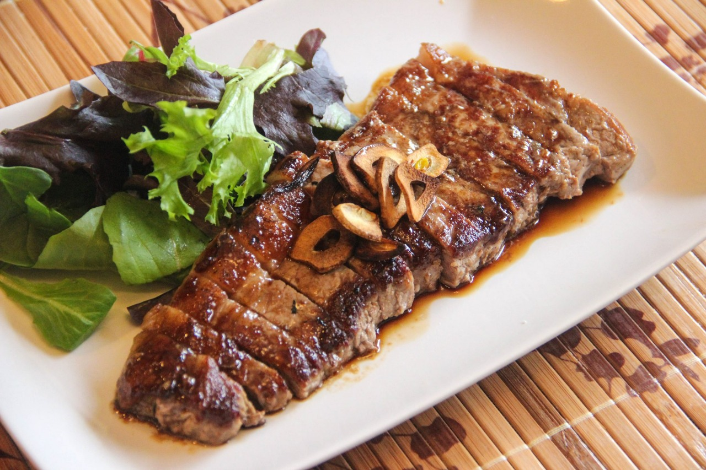
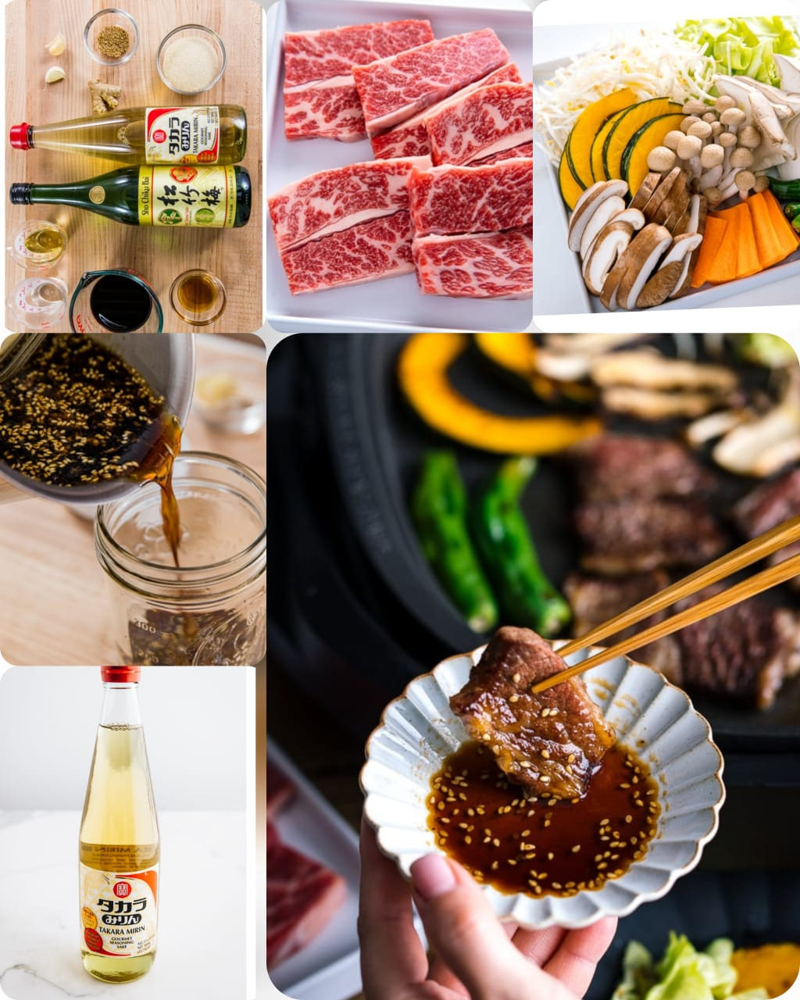

Teppanyaki
Home
As a nation obsessed with grilled food, the Japanese takes delight in grilling indoor by making Teppanyaki (鉄板焼き) at home. It's our Sunday grill, a pastime we enjoy over the weekend and year-round. On the hot griddle, there is thinly sliced meat, succulent seafood, freshly chopped cabbage, generous piles of crunchy bean sprouts, seasonal vegetables, and assortments of mushrooms sizzling away. Family comes together around the small grill, cooking, eating, drinking, and having a good time.

Ingredients
4 oz green cabbage
3 oz carrot
4 oz kabocha
3.5 oz bean sprouts
2 oz shimeji mushrooms
1 king oyster mushroom
2 shiitake mushrooms
1 Tbsp neutral-flavored oil
kosher salt
freshly ground black pepper
12 oz boneless beef short ribs

Nutrition Facts
calories 470
Total Fat 30g
Cholestero 10mg
Sodium 209mg
Total Carbohydrate 0mg
Vitamin C 37mg
vitamin A 2720mg
Procedure
Gather all the ingredients. Serve the meat on a serving platter and keep in the refrigerator until you're ready to cook.
Remove the tough core of the cabbage leaves, and cut them into 1-inch squares.
Peel the carrot and slice into ⅛ inch thick slabs.
Remove the seeds from the kabocha and cut it into ⅛ inch slices.
Poke a few holes into the shishito peppers to avoid popping. Cut off and discard the ends of the shimeji mushrooms and separate them.
Remove the stem of shiitake mushrooms and slice the caps into thin ⅛-inch thick slices.
Cut the king oyster mushroom in half lengthwise and then slice into thin slabs.
Put all the vegetables and mushrooms on another serving platter. Bring the meat and vegetable platters to the table where you set up a portable electric griddle.
Preheat the electric griddle to 375 ºF (190 ºC) and grease the cooking surface with oil. If the meat is well-marbled, you do no need to grease the area where you cook the meat. Put vegetables and meat. We usually divide the griddle space into different sections, such as the meat section, vegetable section, or mushroom section, etc. Season the vegetables and mushrooms with salt and pepper and keep the meat unseasoned.
Each person should have a medium plate and a small bowl of Teppanyaki Sauce. When the food is cooked through, dip in the Teppanyaki Sauce and enjoy!
Expert Guide
Back ←
Scroll to Top ↑